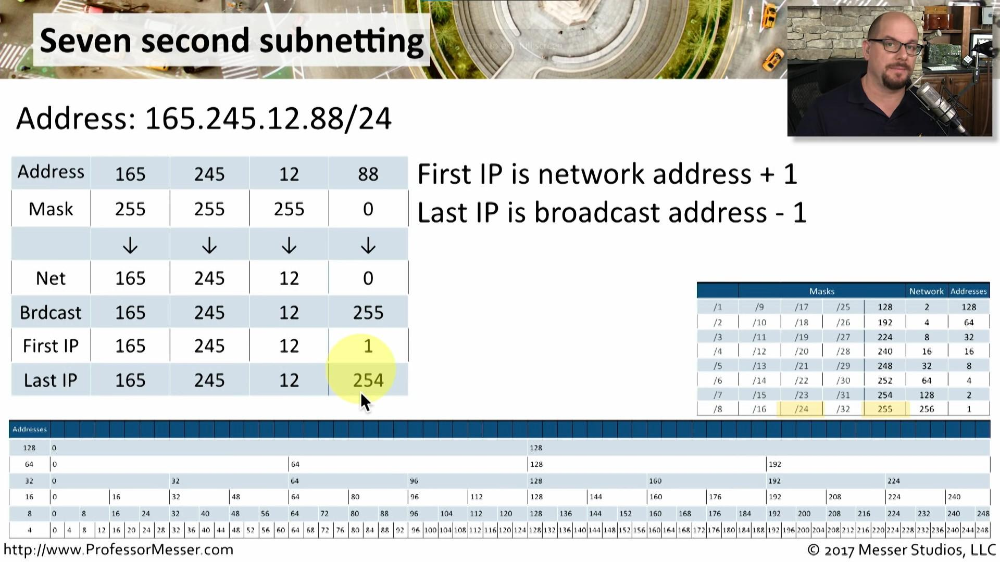

Watch the youtube video to get the concept first and than the mentor's video.
All know that if the number after the slash is more than the number of host will be less.
i.e. 192.168.1.0/28 than the number of host will be 14
i.e. 192.168.0.0/16 than the number of host will be 65534.
- So always remember the relation b/w them and how to read and write subnet and number of host and first address and last address.
192.168.0.0/22
subnet host network broadcast
255.255.252.0 1022 192.168.0.0 192.168.3.255
255.255.255.192 62 192.168.1.0 192.168.1.63
255.255.255.224 30 192.168.1.0 192.168.1.31
Seven Second Subnetting https://www.youtube.com/watch?v=ZxAwQB8TZsM
Step 1 :- Convert the address and mask to decimal
Step 2 :- Calculate the network address : If mask is 255 bring down the address : If mask is 0 use the 0.
Step 3 :- Calculate the broadcast address: If mask is 255, bring down the address : If mask is 0, use 255
Step 4 :- First IP is network address +1 : Last IP is broadcast address -1
